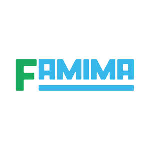

Trade Mark Journal No.2025/044 31 October 2025
UK00004266196 18 September 2025 (3,8,9,11,14,16,18,20,21,24,25,26,28,29,30,31,32,33,35,43)

- Class 3
- Dentifrices; Cosmetics; Scouring preparations [cleanser]; Soaps and detergents; Laundry bleach; Fabric softeners for laundry use; Laundry starch; Funori [seaweed gelatine for laundry use]; Shoe cream; Shoe black [shoe polish]; Incense; Air fragrancing preparations; Abrasive paper [sandpaper]; Abrasive cloth; Abrasive sand; Artificial pumice stone; Polishing paper; Perfumery; Polishing preparations.
- Class 8
- Spoons; Forks [cutlery]; Table knives; Bladed or pointed hand tools and swords; Hand tools, hand operated, other than bladed or pointed hand tools; Egg slicers, non-electric; Katsuo-bushi planes [non-electric planes for flaking dried bonito blocks]; Can openers, non-electric; Cheese slicers, non-electric; Pizza cutters, non-electric; Shaving cases; Pedicure sets; Eyelash curlers; Manicure sets; Scissor.
- Class 9
- Sunglasses; Straps for portable telephones; Straps for camera; Straps for spectacles [eyeglasses and goggles]; Straps for smartphones; Batteries and cells; Parts and accessories for telecommunication machines and apparatus; Portable telephones; Cell phone straps; Personal digital assistants; Smartphones; Covers for smartphones; Cases for smartphones; Electronic machines, apparatus and their parts; Computer programs; Spectacles [eyeglasses and goggles]; Spectacle wipes as accessories of spectacles; Spectacle cases; Game programs for home video game machines; Electronic circuits and CD-ROMs recorded with programs for hand-held games with liquid crystal displays; Phonograph records; Downloadable music files; Recorded audio compact discs; Downloadable image files; Recorded video discs and video tapes; Electronic publications.
- Class 11
- Portable electric fans; Electric lamps and other lighting apparatus; Household electrothermic appliances; Non-electric cooking heaters for household purposes; Barbecues; Kitchen worktops with integrated sinks for commercial use; Kitchen sinks incorporating integrated worktops for household purposes; Sinks; Household tap-water filters, non-electric; Warming pans, non-electric; Pocket warmers, non-electric; Hot water bottles for warming one's feet in bed.
- Class 14
- Clocks and watches; Unwrought and semi-wrought precious stones and their imitations; Key rings; Jewellery boxes; Trophies [prize cups] of precious metal; Commemorative shields of precious metal; Personal ornaments [jewellery, jewelry (Am.)]; Medals; Shoe ornaments of precious metal; Table clocks; Wrist watches; Alarm clocks.
- Class 16
- Paper. Note books; Pens; Pencils; Erasers; Rulers for stationery and office use; Stationery; Pastes and other adhesives for stationery or household purposes; Containers of paper, for packaging; Garbage bags of paper for household purposes; Banners of paper; Flags of paper; Hygienic hand towels of paper; Towels of paper; Table napkins of paper; Hand towels of paper; Hand towels of paper; Assorted pieces of colored paper [paper toy]; Transfer-pictures [paper toy]; Origami folding paper; Cutout pictures of paper; Chiyogami [assorted pieces of Japanese paper with colorful patterns printed thereon]; Coloring pictures; Printed matter; Paintings and calligraphic works; Addressing machines; Ink ribbons; Automatic stamp affixing machines; Electric staplers for offices; Envelope sealing machines for offices; Stamp obliterating machines; Drawing instruments; Typewriters; Checkwriters; Mimeographs; Relief duplicators; Paper shredders for office use; Franking machines; Rotary duplicators; Bags [pouches] of plastics, for packaging; Pencil sharpening machines, electric or non-electric; Food wrapping plastic film for household purposes; Garbage bags of plastics for household purposes; Baggage tags; Photographs.
- Class 18
- Bags; Umbrellas and their parts; Parasols [sun umbrellas]; Pouches; Eco-bags; Leather cloth; Industrial packaging containers of leather; Vanity cases, not fitted; Walking sticks; Canes; Metal parts of canes and walking-sticks; Handles for canes and walking sticks; Casings, of leather, for plate springs; Slings for carrying infants; Boxes of vulcanized fibre; Tool bags, empty; Reins for guiding children; Labels of leather; Clothing for domestic pets.
- Class 20
- Industrial packaging containers of wood, bamboo or plastics; Cushions [furniture]; Zabuton [Japanese floor cushions]; Hand-held flat fans; Hand-held folding fans; Furniture; Wind chimes; Artificial model food samples; Pocket mirrors; Pocket mirror bags; Standing photograph frames.
- Class 21
- Drinking cups; Cosmetic utensils; Toothbrushes, non-electric; Drinking straws; Chopsticks; Gloves for household purposes; Industrial packaging containers of glass or porcelain; Industrial packaging bottles of plastics; Kitchen implements and containers, not including gas water heaters for household use, non-electric cooking heaters for household purposes, kitchen sinks incorporating integrated worktops for household purpose and kitchen sinks for household purpose; Cleaning tools and washing utensils; Clothes brushes; Soap dispensing bottles; Toilet paper holder; Flower vases; Flower bowls; Shoe brushes; Shoe horns; Shoe shine cloths; Shoe shine sponges and cloths; Shoe-trees [stretchers]; Make-up removing appliances; Stirring rods for hot bath water; Bathroom ladles; Flower pots; Hydroponic plant pots for home gardening; Watering cans.
- Class 24
- Handkerchiefs; Towels of textile; Household linen; Baby buntings; Woven textile goods for personal use; Table napkins of textile; Table linen, not of paper; Dish towels for drying; Toilet seat covers of textile; Wall hangings of textile; Cloths for removing make-up; Bath mitts; Labels of textile.
- Class 25
- Clothing; Blousons; Tee-shirts; Headgear for wear; Garters; Sock suspenders; Braces [suspenders] for clothing; Waistbands; Belts [clothing]; Footwear [other than special footwear for sports]; Masquerade costumes; Special footwear for sports; Clothes for sports, other than clothes for water sports.
- Class 26
- Ornamental novelty badges [buttons]; Badges for wear, not of precious metal; Pinback buttons; Pins, other than jewelry; Shuttles for making fishing nets; Hosiery loom needles; Electric hair curlers; Needles; Metal fittings for bags; Eyelets for clothing; Tapes [haberdashery]; Ribbons; Knitted raschel lace fabrics; Embroidery lace fabrics; Tufts and tassels [semi-finished]; Braids; Knitting sticks; Needle-threaders; Sewing boxes; Dressmakers' impressing blades; Sewing thimbles; Pin and needle cushions; Boxes for needles; Artificial flowers; Armband for holding sleeves; Insignias for wear, not of precious metal; Buckles for clothing [clothing buckles]; Brooches for clothing; Obi-dome [special sash clips for obi]; Bonnet pins, not of precious metal; Ornamental adhesive patches for jackets; Brassards; Hair ornaments; Buttons; False beards; False moustaches; Hair curlers, non-electric; Shoe ornaments, not of precious metal; Shoe eyelets; Shoe laces; Metal fasteners for shoes and boots; Human hair.
- Class 28
- Amusement machines and apparatus for use in amusement parks; Arcade video game machines; Toys for domestic pets; Printed paper for lot, other than toy; Toys; Dolls; Go games; Shogi games [Japanese chess]; Utagaruta [Japanese playing cards]; Dice; Sugoroku [Japanese dice games]; Cups for dice; Chinese checkers [games]; Chess games; Checkers [checker sets]; Conjuring apparatus; Dominoes; Playing cards; Hanafuda [Japanese playing cards]; Mah-jong; Game machines and apparatus; Billiard equipment; Sports equipment.
- Class 29
- Snacks based on foodstuffs of animal origin, as well as vegetables and other horticultural comestible products which are prepared or preserved for consumption; Edible oils and fats; Milk products; Meat for human consumption [fresh, chilled or frozen]; Eggs; Fresh, chilled or frozen edible aquatic animals (not live); Frozen vegetables; Frozen fruits; Processed meat products; Processed seafood products; Processed vegetables and fruits; Abura-age [fried tofu pieces]; Kohri-dofu [freeze-dried tofu pieces]; Konnyaku [jelly made from devils' tongue root]; Soya milk; Tofu; Natto [fermented soybeans]; Processed eggs; Pre-cooked curry stew, stew and soup mixes; Ochazuke-nori [dried flakes of laver for sprinkling on rice in hot water]; Furi-kake [dried flakes of fish, meat, vegetables or seaweed]; Name-mono [side-dish made of fermented soybean]; Preserved pulses.
- Class 30
- Aromatic preparations for food, not from essential oils; Tea; Prepared coffee and coffee-based beverages; Cocoa [roasted, powdered, granulated, or in drinks]; Ice; Sweets, confectionery and snacks [other than snacks based on foodstuffs of animal origin, as well as vegetables and other horticultural comestible products which are prepared or preserved for consumption]; Bread and buns; Sandwiches; Chuka-manjuh [steamed buns stuffed with minced meat]; Hamburgers [sandwiches]; Pizzas; Hot dog sandwiches; Meat pies; Seasonings [other than spices]; Spices; Ice cream mixes; Sherbet mixes; Unroasted coffee beans; Roasted coffee beans; Cereal preparations; Chocolate spread; Gyoza [Chinese stuffed dumplings, cooked]; Shumai [Chinese steamed dumplings, cooked]; Sushi; Takoyaki [fried balls of batter mix with small pieces of octopus]; Boxed lunches consisting of rice, with added meat, fish or vegetables; Ravioli; Yeast powder; Koji [fermented malted rice]; Yeast; Baking powder; Instant confectionery mixes; Pasta sauce; Sake lees [by-product of rice for food]; Husked rice; Husked oats; Husked barley; Flour.
- Class 31
- Wreaths of natural flowers for ceremonies or funerals; Fishing baits; Unprocessed hops; Edible aquatic animals, live; Edible seaweeds, unprocessed; Vegetables, fresh; Sugar crops; Fruit, fresh; Malt, not for food; Foxtail millet, unprocessed; Proso millet, unprocessed; Sesame, unprocessed; Buckwheat, unprocessed; Corn [unprocessed grain]; Japanese barnyard millet, unprocessed; Wheat, barley and oats, unprocessed; Rice, unprocessed; Sorghum, unprocessed; Animal foodstuffs; Seeds and bulbs; Trees; Grasses [plants]; Turf, natural; Dried flowers; Seedlings; Saplings; Flowers [natural]; Pasture grass; Bonsai [potted dwarfed trees]; Live mammals, fish [not for food], birds and insects; Silkworm eggs; Cocoons for silkworm breeding; Eggs for hatching; Urushi tree seeds; Rough cork; Palm tree leaves, unworked.
- Class 32
- Waters [beverages]; Beer; Carbonated drinks [refreshing beverages]; Fruit juices; Vegetable juices [beverages]; De-alcoholized beer; Extracts of hops for making beer; Whey beverages.
- Class 33
- Sake; Shochu [Japanese white liquor]; Sake substitute; Shiro-zake [Japanese sweet rice- based mixed liquor]; Naoshi [Japanese liquor]; Mirin [Japanese Shochu-based mixed liquor]; Western liquors in general; Alcoholic fruit beverages; Chuhai [Japanese Shochu-based beverages]; Beer-flavored malt sparkling liquor; Chinese liquors in general; Flavored liquors; Alcoholic beverages, except beer.
- Class 35
- Advertising and publicity services; Digital advertising services; Organization and production of advertising materials; Outdoor advertising; Providing information concerning commercial sales; Publicity material rental; Providing commercial information and advice for consumers in the choice of products and services; Sales promotion for others; Rental of advertising space; Retail services or wholesale services connected with the sale of woven fabrics and beddings; Retail services or wholesale services connected with the sale of clothing; Retail services or wholesale services connected with the sale of diapers; Retail services or wholesale services connected with the sale of footwear, other than special footwear; Retail services or wholesale services connected with the sale of bags and pouches; Retail services or wholesale services connected with the sale of personal articles; Retail services or wholesale services connected with the sale of foods and beverages; Retail services or wholesale services connected with the sale of liquor; Retail services or wholesale services connected with the sale of meat; Retail services or wholesale services connected with the sale of sea food; Retail services or wholesale services connected with the sale of vegetables and fruits; Retail services or wholesale services connected with the sale of confectionery, bread and buns; Retail services or wholesale services connected with the sale of rice and cereals; Retail services or wholesale services connected with the sale of milk; Retail services or wholesale services connected with the sale of carbonated drinks [refreshing beverages] and non-alcoholic fruit juice beverages; Retail services or wholesale services connected with the sale of tea, coffee and cocoa; Retail services or wholesale services connected with the sale of processed food; Retail services or wholesale services connected with the sale of two-wheeled motor vehicles; Retail services or wholesale services connected with the sale of bicycles; Retail services or wholesale services connected with the sale of furniture; Retail services or wholesale services connected with the sale of joinery fittings; Retail services or wholesale services connected with the sale of electrical machinery and apparatuses; Retail services or wholesale services connected with the sale of bladed or pointed hand tools, hand tools and metal hardware; Retail services or wholesale services connected with the sale of kitchen equipment, cleaning tools and washing utensils; Retail services or wholesale services connected with the sale of pharmaceutical, veterinary and sanitary preparations and medical supplies; Retail services or wholesale services connected with the sale of cosmetics, toiletries, dentifrices, soaps and detergents; Retail services or wholesale services connected with the sale of flowers [natural] and trees; Retail services or wholesale services connected with the sale of fuel; Retail services or wholesale services connected with the sale of printed matter; Retail services or wholesale services connected with the sale of paper and stationery; Retail services or wholesale services connected with the sale of sports goods; Retail services or wholesale services connected with the sale of toys, dolls, game machines and apparatus; Retail services or wholesale services connected with the sale of musical instruments and records; Retail services or wholesale services connected with the sale of photographic machines and apparatus and photographic supplies; Retail services or wholesale services connected with the sale of clocks, watches and spectacles [eyeglasses and goggles]; Retail services or wholesale services connected with the sale of tobaccos and smokers' articles; Retail services or wholesale services connected with the sale of semi-wrought precious stones and their imitations; Retail services or wholesale services connected with the sale of pets; Business management advisory services relating to franchising; Assistance in franchised commercial business management; Administration of the business affairs of franchises.
- Class 43
- Providing foods and beverages; Cafeteria services; Preparation and provision of food and drink for immediate consumption; Providing temporary accommodation; Accommodation bureaux services [hotels, boarding houses]; Boarding for animals; Preschooler and infant care at daycare centers; Retirement home; Rental of meeting rooms; Rental of facilities for exhibitions; Rental of Futon and quilts; Rental of pillows; Rental of blankets; Rental of electric hot plates for household purposes; Rental of electric toasters for household purposes; Rental of microwave ovens for household purposes; Rental of cooking equipment for industrial purposes; Rental of kitchen sinks incorporating integrated worktops for commercial use; Rental of kitchen sinks for commercial use; Rental of non-electric cooking heaters for household purposes; Rental of kitchen sinks incorporating integrated worktops for household purposes; Rental of kitchen sinks for household purposes; Rental of dishes; Rental of curtains; Rental of furniture; Rental of wall hangings; Rental of carpets and rugs; Rental of wet wipes; Rental of towels.
FamilyMart Co., Ltd.
Representative: Gill Jennings & Every LLP